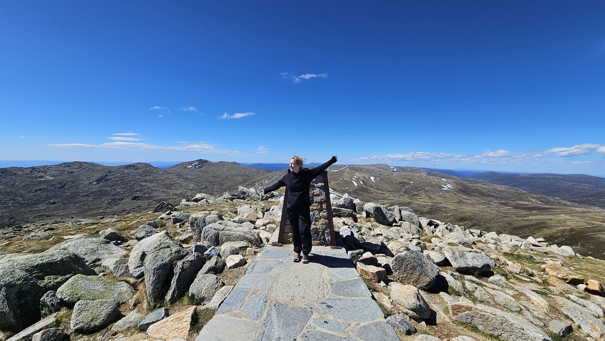
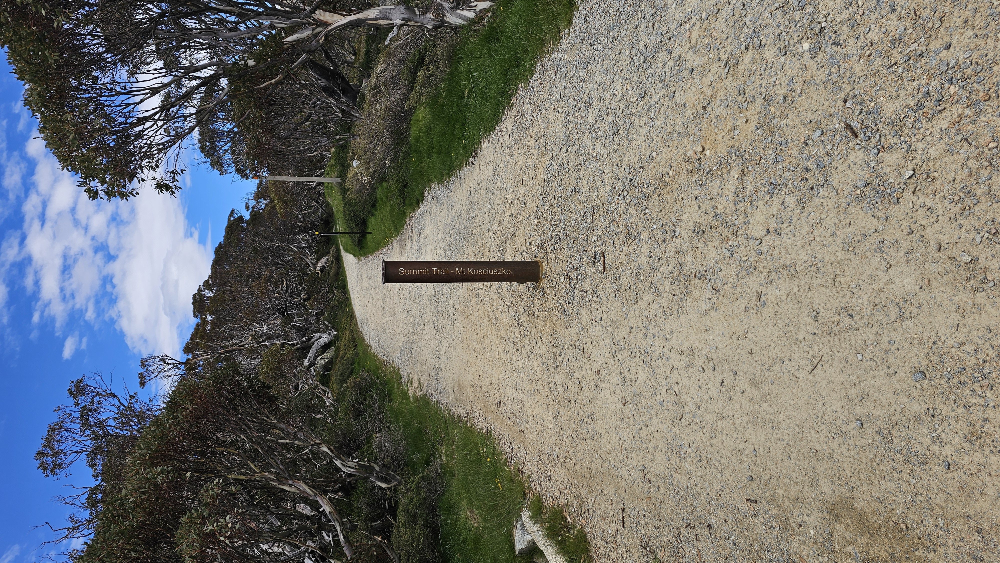
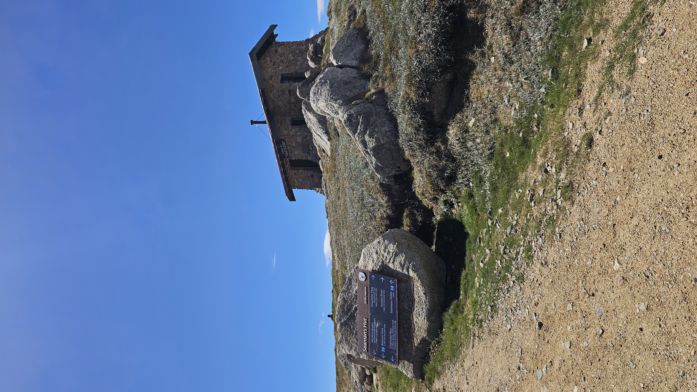
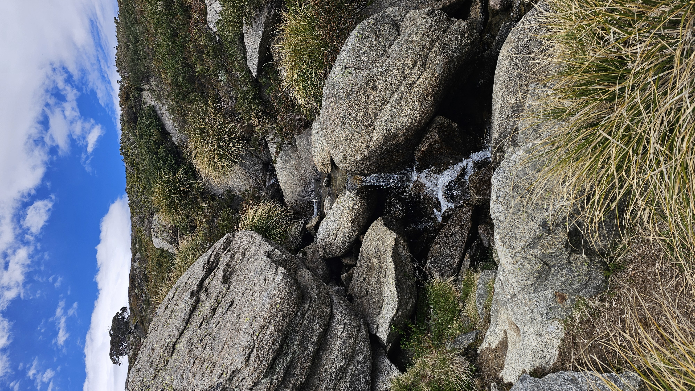
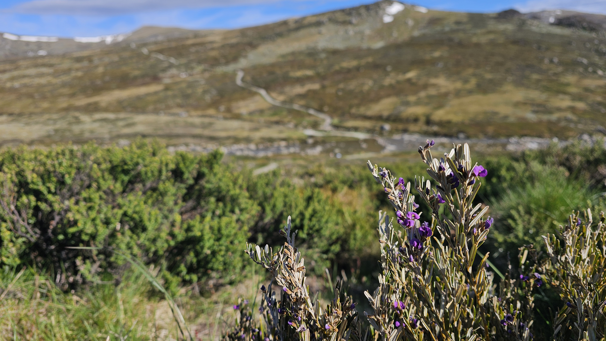
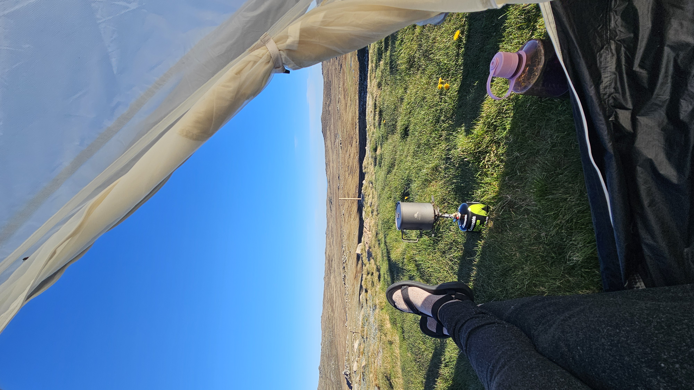
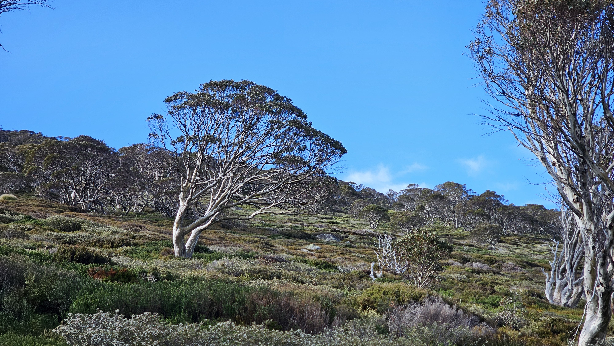
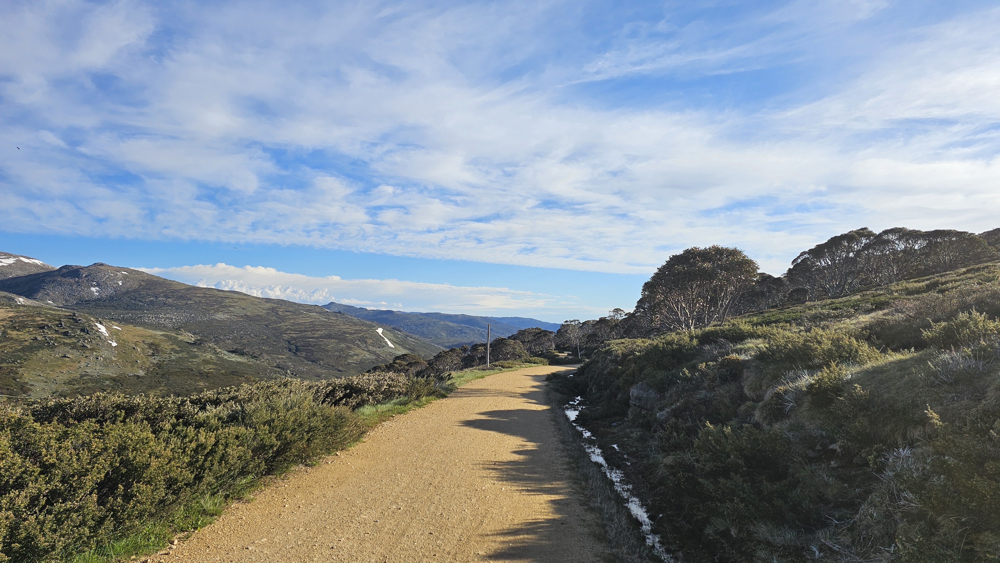
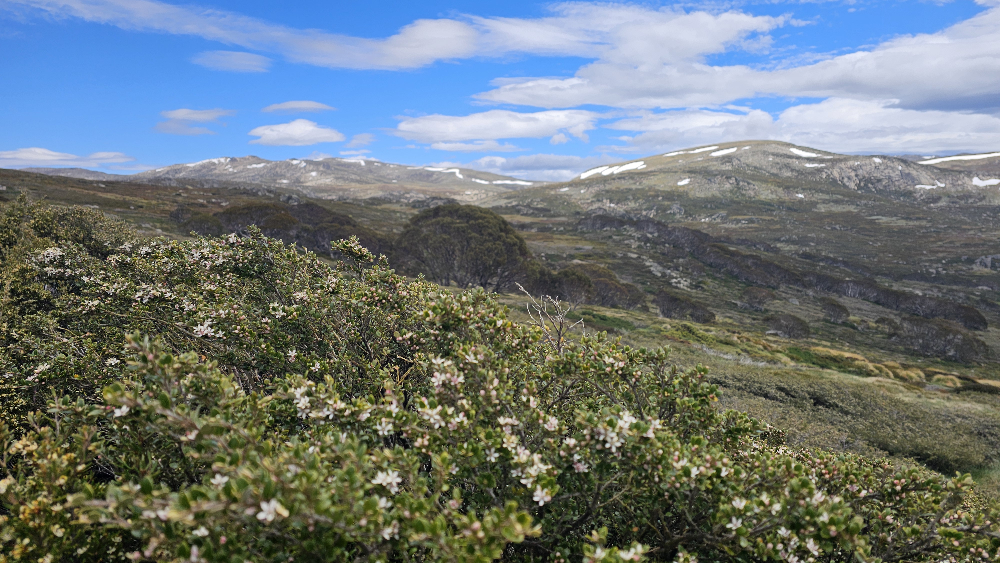

Hiking / Snowy Mountains
Hiking in Mount Kosciuszko National Park
For my first solo overnight hike, I figured I might as well do something memorable and I picked the highest mountain in Australia to camp on.
By sunset I’d stood on top of Mount Kosciuszko, touched snow for the first time and eaten two-minute noodles with a view I could have watched for hours. I felt like I was on a real adventure.

Kosciuszko National Park ⛰️🗺️
Kosciuszko National Park is a breathtaking national park with magical views wherever your gaze falls. Situated between the New South Wales and the Victoria border, in winter it's a snow-filled wonderland and then by summer it's a hikers dream with wildflowers.
Mount Kosciuszko is the highest mountain in Australia and tops out at 2,228 metres.
For a bit of Queensland perspective;
⛰️Mount Cootha in Brisbane reaches 287 metres
⛰️Mount Coolum in the Sunshine Coast reaches 208 metres
Getting started 🚗🥾
I stayed in Jindabyne the night before in a local caravan park. It was great for the free hot showers before hiking. The morning of my hike, I headed into town to grab a bite to eat at one of the cafes, then went to the information centre for a map before setting off for my hike. The staff informed me that a lot of tracks were closed and that off-trail hiking was strictly prohibited at this time of year. There were two other women doing a similar hike, so the staff advised me to keep an eye out.
I altered my plans and decided that for my first overnight-hike I would start with the Summit Walk from Charlotte Pass - just a casual 18.6kms (return) hike.
There's plenty of parking at Charlotte Pass and thankfully I got a park close to the trail start. I set off with my pack and it took a little jiggling to get the weight centred so it didn't hurt my shoulders, but by 4 km I felt pretty good. There were plenty of boulders, wildflowers and oddly a lot of black crows to admire along the way.



Touching snow❄️
I’d already spotted a few snowdrifts on the drive up and could see more from the summit trail. There’s usually little snow around in summer, so I kept my fingers crossed there was some close enough to the trail that I could touch. About 7 km in, just past Seaman’s Hut, there it was, right beside the track. Snow.
This was it. This was my chance.
Of course I grabbed a handful.
Annnnd as expected, it was cold and wet. But I was estactic.
The excitement seemed to give me a bit more energy, or maybe it was ditching my pack at the hut, but I continued on to the top. I ran into two other hikers. After we chatted and introduced ourselves, Georgia and I walked to the top together. On the way back down, we met Amelia, and I learned that they were both on their first overnight hike, too, so my solo trip came with some delightful, unexpected company..
A windy night ahead☁️💨
With the tent all set up there was only two things left to do:
1. Cook dinner
2. Admire the views
On the menu was Alpine Noodles en Bouillon 🍜 aka two-minute noodles.
Golden wheat curls in a savoury broth, finished with the chef’s signature blend of packet spices.
10 out 10 🌟 Highly recommended with a side serving of fresh mountain air.
After dinner I added some fairy lights and enjoyed the sunset changing colours over the landscape. Usually there comes a point on a hike when I have to stop looking and start thinking about getting back to the car. This time my tent was right there, and I could sit and watch for as long as I liked.
At about 2:30 am the wind picked up so much that if felt like my tent would either collapse or fly away. So I got up and tried to fix the stakes the best I could, but the tent ended up sideways with just me anchoring it down. I called out to the girls and they helped me get into the hut with my tent and belongings. This will be one hiking trip I will never forget.
Morning rolled around and with the few hours sleep I had got, I managed to pack everything up quickly, forced a protein bar down and then started the hike back out of the park. While walking out I couldnt help but think how awesome my first overnight hike had been.
I’d touched snow, stood on Australia’s highest peak, survived an incredibly windy night and made a couple of friends. I'm definitely hooked and cannot wait for more overnight hiking adventures.








